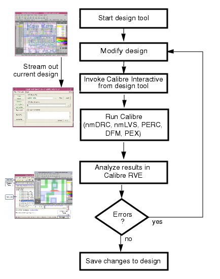

Calibre® Interactive™ and Calibre® RVE™ are essential
components of an interactive workflow using Calibre physical verification
tools. Calibre Interactive and Calibre RVE are integrated to most
standard industry design tools,
Figure 1 shows how you can use Calibre Interactive
and Calibre RVE in an interactive design process.
Figure 1. Interactive Verification Flow
Figure 1 shows a general, high-level flow diagram;
for more detailed flows, refer to the following topics in the Calibre Interactive User’s Manual: